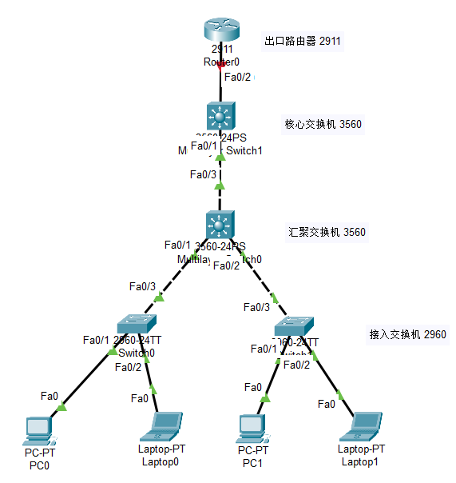

计算机网络实验
Network
- 实验学时
- 2
- 实验类型
- 验证型
- 实验题目
- 交换机 Switch
- 实验目的
- 实验内容
- 交换机常用命令
- 交换机基本配置
- 局域网 LAN
- 虚拟局域网 VLAN
- 实验器材
- 前置知识
- 使用步骤
- 构建网络拓扑
3层架构
- 接入交换机 (2960)：划分 VLAN，将终端端口划入对应 VLAN
- 汇聚交换机 (3560)：配置 VLAN 接口（SVI），实现 VLAN 间路由；配置 Trunk 连接核心
- 核心交换机 (3560)：配置路由（静态或 OSPF），连接汇聚和出口
- 出口路由器 (2911)：配置 NAT，默认路由指向外部网络
- 终端设备：配置 IP 地址和默认网关
- 参考效果和参考命令
- 拓展与思考

串口初始化配置交换机


Telnet远程登陆交换机